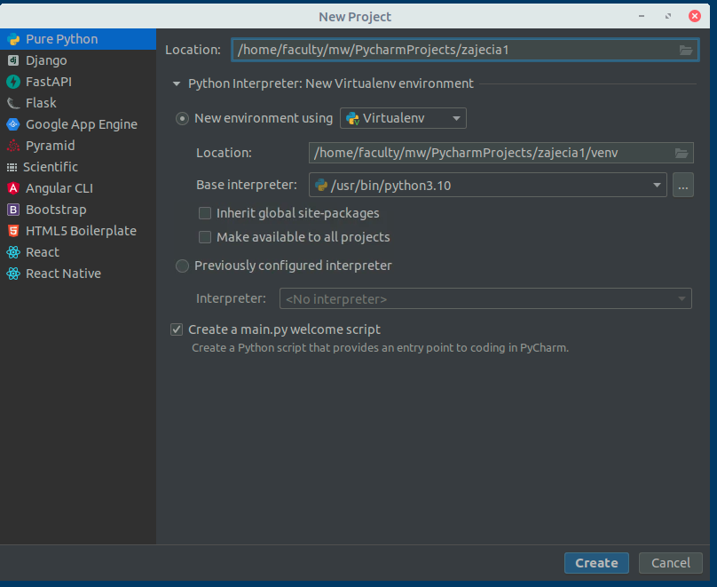
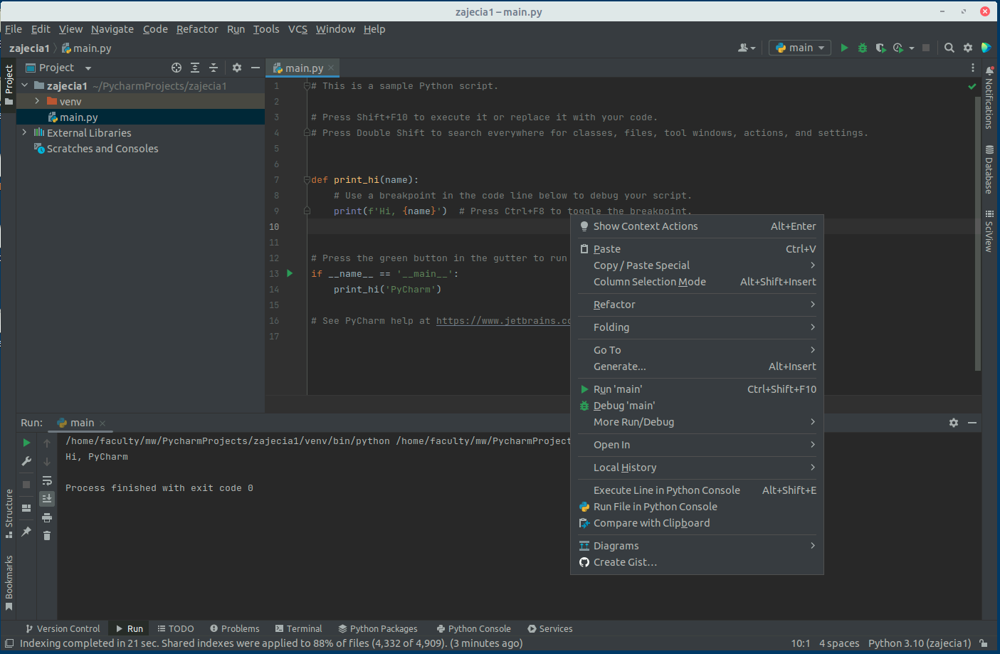
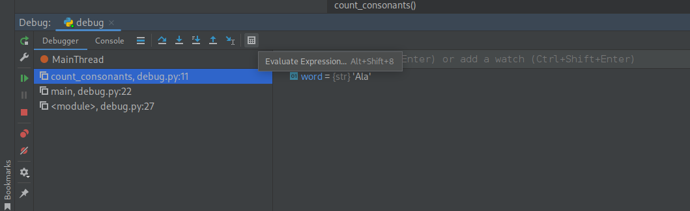
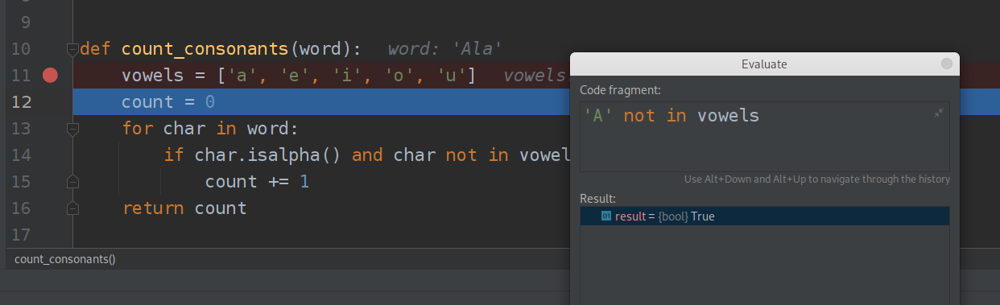
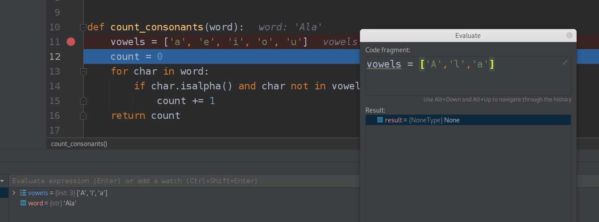
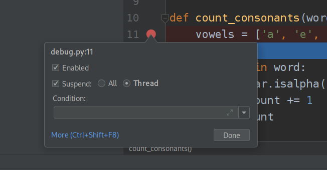

Laboratorium 2 - Debuggowanie programów w Python, mapowanie danych, przetwarzanie danych
Debuggowanie w PyCharm
Kod numer 1, wklej kod do nowego pliku w Pycharm i uruchom. Vowel to samogłoski a consonants to spółgłoski.
def count_vowels(word):
vowels = ['a', 'e', 'i', 'o', 'u']
count = 0
for char in word:
if char in vowels:
count += 1
return count
def count_consonants(word):
vowels = ['a', 'e', 'i', 'o', 'u']
count = 0
for char in word:
if char.isalpha() and char not in vowels:
count += 1
return count
def main():
word = input("Enter a word: ")
vowels = count_vowels(word)
consonants = count_consonants(word)
print("The word", word, "contains", vowels, "vowels and", consonants, "consonants.")
# User needs to debug the error below
main()Enter a word: Ala
The word Ala contains 1 vowels and 2 consonants.
Uruchom kod dla słowa “Ala”. Zwrócona odpowiedź nie jest poprawna. Znajdź błąd. Aby znaleźć błąd w programie można posłużyć się procesem debuggowania, czyli uruchamiania programu krok po kroku w celu sprawdzenia jego działania w kolejnych iteracjach.
W celu uruchomienia programu w trybie debuggowania w Pycharm należy wybrać zamiast zielonej strzałki, ikonkę zielonego robaczka, lub też kliknąć na pliku prawym przyciskiem myszy i wybrać opcję Debug (powinna być zaraz pod Run).

Z debuggowaniem związane jest pojęcie breakpointa, czyli punktu zatrzymania wykonania. Aby dodać breakpoint w PyCharm należy nacisnąć obok numeru linii programu tak by pojawiła się czerwona kropka, ona symbolizuje właśnie breakpoint.
Gdy program osiągnie breakpoint zatrzyma swoje wykonanie i w edytorze kodu zobaczymy podświetloną linię - znaczy to, że program wykonał wszystkie operacje do tej linii (ale nie wliczając jej).

Dodatkowo w menu podręcznym na dole ekranu pojawić powinno się okno z podglądem wartości zmiennych w danym punkcie wykonania.

Od tego momentu możemy wykonać trzy operacje
F9 - wznawia uruchomienie programu do osiągnięcia następnego breakpointa
F8 - uruchamia kolejną linijkę programu na poziomie na którym się znajdujemy (czyli obecnie zaznaczoną)
F7 - wykonuje kolejną linię programu (czyli w przypadku wykonania funkcji wejdzie do środka metody i wykona pierwszą linijkę tej metody a w przypadku prostej operacji wykona poświetloną właśnie linijkę.
Przetestuj działanie dodając breakpoint w 21 linijce programu i wybierając raz F7 raz F8 raz F9.
Następnie ustaw breakpoint w 11 linijce programu i przejdź przez pętle linijka po linijce, czy widzisz gdzie jest błąd w zliczaniu spółgłosek?
Czasem w sprawdzaniu co się dzieje pomaga nam opcja Evaluate expression gdzie możemy wpisać dowolny kod i zobaczyć jego wynik.

Uwaga! Dostępna jest ona oczywiście tylko w trybie debuggowania! Wybierz evaluate expression i wpisz w środek
‘A’.isalpha()
‘A’ not in vowels
Zauważ, że aby evaluator wiedział co oznacza lista vowels muszę wykonaniem programu dojśc do miejsca gdzie lista ta była zadeklarowana!

Zauważ też że ewaluator może wpływać na zmienne w działającym programie, może wiec zmieniać jego wykonanie i stan (nawet po wyjściu z jego okienka), używaj go więc rozważnie!

Jak widać błędem było nieuwględnienie wielkich liter w przetwarzaniu. Popraw bład i uruchom program raz jeszcze.
Gdy klikniemy prawym przyciskiem na breakpoint pojawi się nam okno opcji dla breakpointa. Możemy ustawić w nim warunek - wtedy program zatrzyma się w tym miejscu tylko gdy warunek będzie spełniony. Druga istotna dla nas później opcja to możliwość zatrzymania tylko wątku który dotarł do tego miejsca lub wszystkich wątków programu (będzie to wykorzystane na kolejnych zajęciach).

Kod 2: Ten kod używa zmodyfikowanego algorytmu szybkiego wyboru, aby znaleźć medianę bez sortowania listy. Funkcja find_median() wielokrotnie dzieli listę na elementy, które są mniejsze, równe lub większe niż losowo wybrany element przestawny, aż znajdzie element, który pojawia się na środku listy.
Przetwarzanie i generowanie danych
Iteratory
Poniżej znajdziemy przyklady implementacji iteratorów w Python. Sprawdź co stanie się w sytuacji, gdy dojdziemy do końca iteratora.
L = [1, 2, 3]
it = iter(L)
it
print(it.__next__())
print(next(it))
print(it.__next__())
print(next(it))1 2 3
---------------------------------------------------------------------------
StopIteration Traceback (most recent call last)
Cell In [2], line 8
6 print(next(it))
7 print(it.__next__())
----> 8 print(next(it))
StopIteration:
Gdy wywołasz iter() na słowniku, otrzymasz iterator, który przegląda klucze słownika:
slownik = {'Jan': 'Sty', 'Feb': 'Lut', 'Mar': 'Mar', 'Apr': 'Kwi', 'May': 'Maj', 'Jun': 'Cze',
'Jul': 'Lip', 'Aug': 'Sie', 'Sep': 'Wrz', 'Oct': 'Paz', 'Nov': 'Lis', 'Dec': 'Gru'}
it = iter(slownik)
a = next(it)
print(a, slownik[a])
a = next(it)
print(a, slownik[a])
a = next(it)
print(a, slownik[a])
a = next(it)
print(a, slownik[a])
a = next(it)
print(a, slownik[a])Jan Sty Feb Lut Mar Mar Apr Kwi May Maj
Słowniki posiadają metody, które zwracają inne iteratory. Aby iterować po wartościach lub parach klucz/wartość, po prostu użyj metod values() lub items() w celu uzyskania odpowiedniego iteratora.
slownik = {'Jan': 'Sty', 'Feb': 'Lut', 'Mar': 'Mar', 'Apr': 'Kwi', 'May': 'Maj', 'Jun': 'Cze',
'Jul': 'Lip', 'Aug': 'Sie', 'Sep': 'Wrz', 'Oct': 'Paz', 'Nov': 'Lis', 'Dec': 'Gru'}
it = slownik.values()
print(it)
it = slownik.items()
print(it)dict_values(['Sty', 'Lut', 'Mar', 'Kwi', 'Maj', 'Cze', 'Lip', 'Sie', 'Wrz', 'Paz', 'Lis', 'Gru'])
dict_items([('Jan', 'Sty'), ('Feb', 'Lut'), ('Mar', 'Mar'), ('Apr', 'Kwi'), ('May', 'Maj'), ('Jun', 'Cze'), ('Jul', 'Lip'), ('Aug', 'Sie'), ('Sep', 'Wrz'), ('Oct', 'Paz'), ('Nov', 'Lis'), ('Dec', 'Gru')])
Iterator na listę
Możemy zamienić obiekt iteratora na listę lub kolekcję korzystając z metod list() oraz tuple().
L = [1, 2, 3]
iterator = iter(L)
t = list(iterator)
print(t)
iterator = iter(L)
t = tuple(iterator)
print(t)[1, 2, 3] (1, 2, 3)
Własny iterator
Możemy definiować własne klasy iteratorów. Przykładowa implementacja obiektu odliczającego (będącego zarazem nieskończonym iteratorem) znajduje się poniżej:
from collections.abc import Iterator
class count(Iterator):
def __init__(self, start=0, step=1):
self.c, self.step = start-step, step
def __next__(self):
self.c += self.step
return self.c
count = count(0,1)
print(next(count))
print(next(count))0 1
Generatory
Funkcja zawierająca słowo kluczowe yield jest funkcją generatora. Kompilator kodu bajtowego Pythona identyfikuje go, co w rezultacie powoduje inną kompilację funkcji. Co więcej, wywołanie funkcji generatora zwróci generator obsługujący protokół iteratora, a nie pojedynczą wartość.
seq1 = 'ABC'
seq2 = (1, 2, 3)
[(x, y) for x in seq1 for y in seq2][('A', 1),
('A', 2),
('A', 3),
('B', 1),
('B', 2),
('B', 3),
('C', 1),
('C', 2),
('C', 3)]
def generate_pairs(A,B):
for x in A:
for y in B:
yield (x, y)
seq1 = 'ABC'
seq2 = (1, 2, 3)
gen = generate_pairs(seq1,seq2)
print(gen)
print(next(gen))
print(next(gen))
print(next(gen))
print(next(gen))
print(next(gen))
print(next(gen))<generator object generate_pairs at 0x7f6874793c80>
('A', 1)
('A', 2)
('A', 3)
('B', 1)
('B', 2)
('B', 3)
Lambda
W Pythonie funkcja Lambda jest funkcją anonimową, co oznacza, że jest funkcją bez nazwy. Może mieć dowolną liczbę argumentów, ale tylko jedno wyrażenie, które jest obliczane i zwracane. Musi mieć wartość zwracaną. Najprostsza lambda to funkcja identycznościowa.
ident = lambda x : x
print(ident(6))6
Ponieważ funkcja lambda musi mieć wartość zwracaną dla każdego prawidłowego wejścia, nie możemy jej zdefiniować za pomocą if, ale bez else, ponieważ nie określamy, co zwrócimy, jeśli warunek if będzie fałszywy, tj. jego część else. Zrozummy to na prostym przykładzie funkcji lambda, która zwraca liczbę tylko gdy jest ona dodatnia:
abs = lambda x : x if(x > 0)
print(abs(6))
print(abs(-6)) Cell In [10], line 1
abs = lambda x : x if(x > 0)
^
SyntaxError: invalid syntax
Funkcja lambda musi zwracać wartość, a ta funkcja zwraca x, jeśli < code>x > 0 i nie określa, co zostanie zwrócone, jeśli wartość x jest mniejsza lub równa 0.
Aby to poprawić, musimy określić, co zostanie zwrócone, jeśli warunek if będzie fałszywy, tj. musimy określić jego część else.
abs = lambda x : x if(x > 0) else -x
print(abs(6))
print(abs(-6))6 6
max = lambda a, b : a if(a > b) else b
print(max(1, 2))
print(max(10, 2))2 10
Połączenie lambdy z list comprehension. W każdej iteracji wewnątrz list comprehension tworzymy nową funkcję lambda z domyślnym argumentem x (gdzie x jest bieżącym elementem iteracji). Później, wewnątrz pętli for, wywołujemy ten sam obiekt funkcji z domyślnym argumentem za pomocą item() i uzyskujemy pożądaną wartość. Zatem is_even_list przechowuje listę obiektów funkcji lambda.
is_even_list = [lambda arg = x: arg%5 for x in range(1, 11)]
for item in is_even_list:
print(item())1 2 3 4 0 1 2 3 4 0
Wywołanie lambdy przez inną lambdę
List = [[2,3,4],[1, 4, 16, 64],[3, 6, 9, 12]]
# Sort each sublist
sortList = lambda x: (sorted(i) for i in x)
for i in sortList(List):
print(i)
multiplyByTwo = lambda x, f : [y for y in f(x)]
print(multiplyByTwo(List,sortList))[2, 3, 4] [1, 4, 16, 64] [3, 6, 9, 12] [[2, 3, 4], [1, 4, 16, 64], [3, 6, 9, 12]]
List comprehension
List comprehension to elegancki sposób definiowania i tworzenia list na podstawie istniejących list. Składnia [expression for item in list]. Moc list comprehension to to że może zidentyfikować, kiedy otrzyma stringa lub tuple i pracować na nich jak na liście.
Operacje w list comprehension możesz zrobić za pomocą pętli. Jednak nie każdą pętlę można przepisać jako list comprehension. Są one jednak bardziej eleganckim i zwięzłym zapisem wielu akcji.
word_letter = [ letter for letter in 'word' ]
print( word_letter)['w', 'o', 'r', 'd']
number_list = [ x for x in range(20) if x % 2 == 0]
print(number_list)[0, 2, 4, 6, 8, 10, 12, 14, 16, 18]
Podwójny warunek logiczny (nested if)
num_list = [y for y in range(100) if y % 2 == 0 if y % 5 == 0]
print(num_list)[0, 10, 20, 30, 40, 50, 60, 70, 80, 90]
Tutaj sprawdź rozumienie listy:
Czy y jest podzielne przez 2, czy nie? Czy y jest podzielne przez 5, czy nie?
Jeśli y spełnia oba warunki, y jest dołączane do num_list. Zwróć uwagę na różnicę między filtrowaniem po pętli a zmianą elementu - przed for in oraz to w jakiej kolejności są wykonywane.
num_list = ['A' if y % 20 == 0 else 'B' for y in range(100) if y % 2 == 0 if y % 5 == 0]
print(num_list)
num_list = [rr for rr in [10 if y % 25 == 0 else 7 for y in range(100)] if rr % 2 == 0 if rr % 5 == 0]
print(num_list)['A', 'B', 'A', 'B', 'A', 'B', 'A', 'B', 'A', 'B'] [10, 10, 10, 10]
Zanieżdzone pętle:
matrix = [[1, 2], [3,4], [5,6], [7,8]]
transpose = [[row[i] for row in matrix] for i in range(2)]
print (transpose)[[1, 3, 5, 7], [2, 4, 6, 8]]
Zip
Połączenie dwóch list argumentów w jedną listę krotek może być trudne. Na szczęście python udostępnia funkcję zip. Spowoduje to automatyczne spakowanie N list w jedną listę krotek (każda krotka zawiera N elementów).
a = [1, 2, 3, 4, 5]
b = [6, 7, 8, 9, 10]
c = [11, 12, 13, 14, 15]
args = zip(a, b, c)
print(list(args))[(1, 6, 11), (2, 7, 12), (3, 8, 13), (4, 9, 14), (5, 10, 15)]
Filter
Filter() zatrzymuje tylko te elementy, w których generuje wartość True, a usuwa wszystkie dane wejściowe, które wygenerowały wartość False.
Filter przyjmuje dwa argumenty funkcję i iterowalny obiekt.
li = [5, -5, 2, -2, 0, 62, -77, 23, 73, -61]
final_list = list(filter(lambda x: (x > 0), li))
print(final_list)[5, 2, 62, 23, 73]
Map
Funkcja map() w Pythonie przyjmuje jako argument funkcję i listę argumetów. Działa podobnie do list comprehension. Funkcja jest wywoływana za pomocą funkcji lambda i zwracana jest nowa lista wartości, która zawiera wszystkie zmodyfikowane elementy wejściowe zwrócone przez tę funkcję. Przykłady:
li = [5, -5, 2, -2, 0, 62, -77, 23, 73, -61]
final_list = list(map(lambda x: x*2, li))
print(final_list)[10, -10, 4, -4, 0, 124, -154, 46, 146, -122]
countries = ['poland', 'france', 'spain']
uppered_countries = list(map(lambda countries: countries.upper(), countries))
print(uppered_countries)['POLAND', 'FRANCE', 'SPAIN']
Przypadek większej liczby argumentów oraz wykorzystania funkcji nazwanej zamiast lambdy:
def add(x, y):
"""Return the sum of the two arguments"""
return x + y
a = [1, 2, 3, 4, 5]
b = [6, 7, 8, 9, 10]
result = map(add, a, b)
print(list(result))[7, 9, 11, 13, 15]
Reduce
Funkcja reduce() w Pythonie przyjmuje jako argument funkcję i listę. Funkcja jest wywoływana za pomocą funkcji lambda, a zwracany jest nowy zredukowany wynik. Funkcja reduce() należy do modułu functools.
from functools import reduce
li = [1, 2, 3, 4, 5, 6]
sum = reduce((lambda x, y: x + y), li)
print(sum)21
W tym wypadku wynik poprzedniego przetwarzania jest dodawany do kolejnego itd (((((1+2)+3)+4)+5)+6). Lambda w reduce powinna przyjmować dwa argumenty.
Podsumowanie
Map |
Filter |
Reduce |
||
|---|---|---|---|---|
I nput vs ou tput |
N do N |
N do M, gdzie N>=M |
N do 1 |
|
W ykor zyst anie |
Transformacja i wzbogacenie danych |
Filtrowanie danych |
Redukcja do pojedynczej wartości |
|
A plik acja |
Każda dana wejściowa przechodzi przez funkcję |
Odrzucane dane dla których warunek jest false |
Parami redukcja wejścia do jednej wartości |